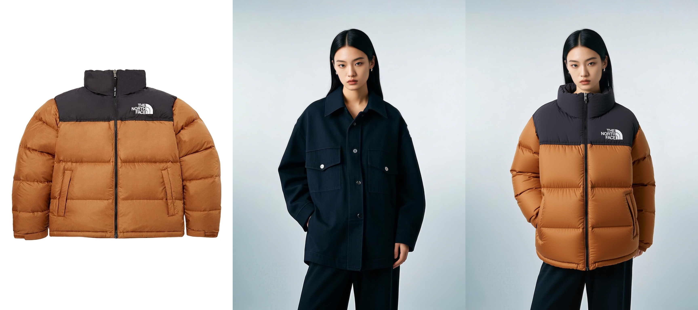
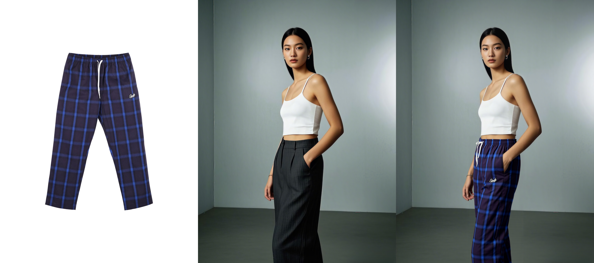
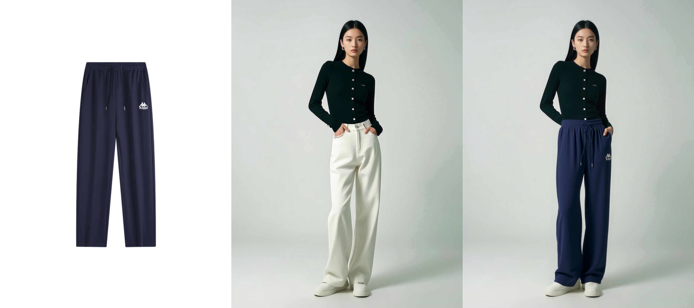

Virtual Try-On Show
Try-On Upper

From left to right: Upper Model Result
Try-On Lower
 From left to right: Lower Model Result
Try-On Shoes


Recent advancements in generative models have significantly advanced virtual try-on systems. However, existing approaches relying on open-source datasets and mask-based pipelines still suffer from critical limitations, including dataset bias and error propagation caused by imperfect garment masks. These issues often lead to suboptimal single-pass generation results, such as fragmented patterns, color discrepancies, and inconsistent garment lengths, primarily due to the model’s limited understanding of real-world try-on dynamics.
To address this, we introduce Instruct-vton, the first framework to benchmark and optimize virtual try-on through multi-turn user-guided interactions. We curate a novel multi-turn dialogue dataset, augmented from existing open-source benchmarks, to simulate iterative refinement scenarios where users progressively clarify requirements (e.g., adjusting fit, correcting textures).
Our framework integrates an adaptive training strategy that dynamically incorporates user feedback to resolve ambiguities in garment geometry and appearance. Experiments demonstrate that Instruct-VTON achieves state-of-the-art performance across fidelity metrics (e.g., LPIPS, FID) and user studies compared to single-turn baselines. The experiment further show that our dataset and interaction paradigm significantly improve robustness to challenging poses and complex clothing designs.
@article{xxxxxxxxxxx,
author = {xxxx, xxxx, xxxx, xxxx and xxxx, xxxx and xxxx, xxxx and xxxx, xxxx and xxxx, xxxx},
title = {FitTalk: Benchmarking Interactive Virtual Try-On via Multi-Turn Conversations},
journal = {NeurIPS},
year = {2025},
}